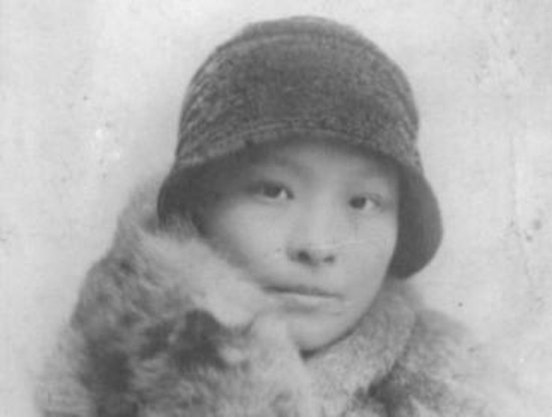

|
回目录 回主页 |
1、首任中共總書記陳獨秀是清朝四品命官陳衍庶的繼子，也是當過陳衍庶保鏢的張作霖的義弟，自小聰敏好學，放蕩不羈。1897年，他與高曉嵐（別名高大眾）結婚，育三子一女。他又與高曉嵐同父異母之妹高君曼（別名高小眾）一見鍾情，於1910年拋妻棄子，私奔同居。 2、1916年底，陳獨秀應蔡元培之邀，擔任北京大學文科學長，課餘常赴八大胡同嫖妓，被眾教授彈劾去職，遂創辦中國共產黨。1926年，身為中共總書記的陳獨秀突然失蹤。上海機關遍尋不獲，便在報上登尋人啟事。一個月後他才現身。原來他與情人施芝英去杭州偷歡了。 3、中共四大推舉的政治局常委瞿秋白主持中共五大，撤銷陳獨秀總書記職務。施芝英見陳獨秀失勢，即刻拋棄陳，從武漢返回上海。瞿秋白在上海大學任教期間，混跡於丁玲、王一知等多位愛慕他的女性之間，卻青睞上海共產主義小組創始人沈定一的兒媳婦楊之華，公然與之同居。 4、在中共四大上，有個人反對國共合作，憤而退黨。此人名叫張申府，曾仼北大教授兼圖書館主任，喝斥過在圖書館打工的毛澤東。他和陳獨秀、李大釗三人才是中國共產黨真正的創始人。他把張國燾的戀愛對象劉清揚搶到手，同去法國創建中共旅歐支部，介紹周恩來、朱德入黨。 5、張申府是第一個鼓吹性解放理論的中國人，也是第一個介紹愛因斯坦相對論的中國學者。他以有婦之夫身份與全國學聯主席劉清揚結婚，又找孫蓀荃當情人。劉最終登報聲明離婚。他推薦周恩來接任黃埔軍校政治部主任。他還指使姚依林發起1･29學生運動。 6、沈定一是個老頭，深受傳統文化影響，眼看瞿秋白搶走他兒子沈劍龍的老婆，覺得共產共妻太可怕，退黨了事。接替瞿秋白主持中共工作的人是中共政治局常委李立三。1923年，他在北京結識楊開智。楊委託李帶其妻李一純返長沙。結果李立三把李一純拐到安源搞工運去了。 7、中共六大政治局常委蔡和森是個工作狂，他的土家族夫人向警予則是中共第一個婦女部長。夫妻倆同赴法國勤工儉學，歸國後在上海中共中央機關工作。向警予總是一本正經，還在會議中制止陳獨秀講黃色笑話。一次蔡和森出差歸來，發現向警予睡在中央宣傳部長彭述之的床上。 8、蔡和森見老婆偷情，憂憤難抑。張國燾就以自己女朋友、中共第一個女黨員劉清揚被張申府橫刀奪愛為先例，勸解蔡想開一點兒。陳獨秀隨即主持召開政治局會議，決定：蔡向不準離婚，彭述之調職使用，讓李立三與李一純會同蔡和森與向警予往蘇聯出席共產國際會議，並留學。 9、李一純為楊開智（楊開慧胞兄）生一女，離棄楊開智嫁給李立三，又為李立三生一子。她心有內疚，將妹妹李崇德嫁給楊開智。1925年，李一純由向警予介紹入黨。李立三夫妻與蔡和森夫妻同赴蘇聯之後，李一純不理李立三，蔡和森也不理向警予，兩人自行同居，再於1926年底結婚。 10、李一純與蔡和森結婚之後生一子一女。她再將另一個妹妹李崇善嫁給第二任丈夫李立三。向警予也不甘示弱，與蒙古共產黨某領導人同居。1927年，李一純和向警予同期歸國到武漢工作。後來，李一純被捕，向警予被殺。1940年，李一純到延安，與毛澤東通姦，生女李吉提。

11、北大教授楊昌濟育有一子楊開智和一女楊開慧。楊開智是李一純前夫，楊開慧是毛澤東前妻。所以，李曾經當過毛的嫂子。李一純先後與中共政治局三位常委李立三、蔡和森、毛澤東發生性關係，生下四名子女，在中共歷史上實屬空前絕後。毛李私生女因毛化名李得勝而姓李。
李一純 12、中共政治局常委張太雷在八･七會議之後擔任廣州起義總指揮，竟然把上海共產主義小組創始人施存統的妻子王一知從上海帶到廣州當情婦，導致施存統羞憤難當，怒而退黨。1927年12月12日，張太雷乘坐敞篷汽車駛出廣州公安局總部，遭遇街頭襲擊，身中三槍而亡。 13、施存統以寫《非孝》一文暴得大名，曾是中共首任團中央書記。他與王一知分手之後，赴武漢任中央軍校政治部主任，與該校女教官鍾復光結婚。周恩來作為施存統的黨內同僚，也被其前妻王一知的美貌吸引，與王一知暗中勾搭結歡，被周妻鄧穎超發覺。鄧因吃醋而打周耳光。 14、1925年，劉少奇攜妻何寶珍赴上海總工會主持工作，時常應邀到上海大學演講，認識了當時尚未嫁給施存統的該校女生王一知。劉少奇非常喜歡王一知，親自介紹她加入中國共產黨，還頻繁與她秘密約會。風聲走漏到劉妻何寶珍之處，刺激得何寶珍去尋短見而自殺未遂。 15、王一知與張太雷生子張芝明。她在張太雷死後攜子嫁給中共上海地下電台負責人襲飲冰，在周恩來領導的中央特科工作。中共建政後，王一知長期擔任著名的紅色貴族學校北京101中學校長。原政治局常委曾慶紅就是該校學生。施存統則當了民建中央副主席和勞動部副部長。 16、毛澤東的原配妻子是父母包辦的羅一姑。他不喜歡羅氏，暗戀表姐王十姑，未成，晚年將王十姑的後人王海容招進中南海作為替代式安慰。1919年，毛澤東從北京返回長沙，與陶斯詠相戀並同辦文化書店。陶是富商之女，擔任著湖南學生聯合會副會長，時稱江南第一才女。 17、毛陶之戀受到女方家長的反對。陶非毛不嫁，毛卻看上了北大教授楊昌濟的女兒楊開慧。1920年冬，毛與楊先同居後結婚。陶斯詠深受刺激，避去南京金陵大學進修。1921年7月，毛赴上海參加中共一大，會後轉去南京與陶幽會，舊情復燃。此事被楊知道，幾乎鬧翻。 18、毛澤東與楊開慧育有三子。1927年9月，毛領導秋收起義，拋妻棄子上了井岡山，又與當地女匪賀子珍同居。楊開慧攜三子困守長沙板倉老家，1930年被湖南省長何鍵殺害。紅軍長征之後，毛在延安又拋棄賀子珍，娶江青，還與吳莉莉、張文秋、李一純等人亂搞。 19、毛一生真正心愛的女人不是楊開慧，而是陶斯詠。他晩年說起陶斯詠，還兩眼放光。1923年，他與陶分別，寫下《賀新郞･別友》一詞贈于美人。其中有“算人間知己吾與汝”的句子。陶一生未嫁，32歲鬱鬱而終。此詞在毛死後發表，官方故意胡說它是寫給楊開慧的。 |
回目录 回主页 |